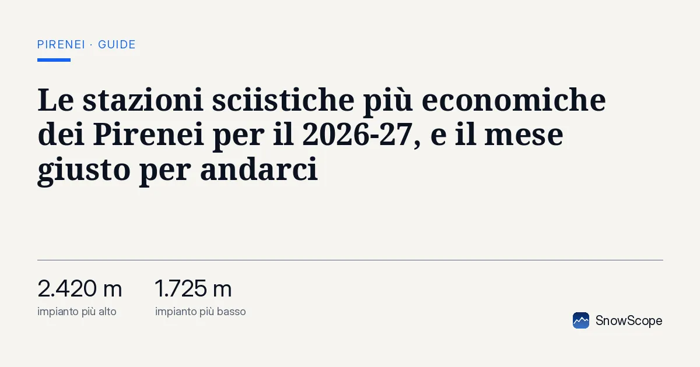

Le stazioni sciistiche più economiche dei Pirenei per il 2026-27, e il mese giusto per andarci
I Pirenei sono le montagne grandi più economiche dove sciare nell'Europa occidentale: Cauterets vende uno skipass giornaliero per adulti a 46 EUR e Boí Taüll a 49 EUR. Ma qui il momento giusto conta più che sulle Alpi. Nella nostra storia della neve di 46 inverni passati, nessuna delle sei stazioni confrontate ha una singola settimana con 50 cm di neve in 9 inverni su 10, e dicembre è di solito scarso.
Le previsioni neve in tempo reale per Cauterets Cirque du Lys nell'app SnowScopeAltezza neve, allerte powder e mappa 3D, gratis.
Sei stazioni dei Pirenei a confronto per prezzo
Cauterets è la più economica con 46 EUR al giorno alla tariffa pubblica, e 276 EUR per 6 giorni. Boí Taüll in Catalogna costa 49 EUR. Lo skipass unico Astún-Candanchú costa 54,5 EUR online e 59,5 EUR in biglietteria, e il Grand Tourmalet, il comprensorio francese più grande della catena, 55 EUR al giorno o 294 EUR per 6 giorni.
I prezzi di Grandvalira in Andorra cambiano in base alla data: 62,5 EUR online e 72 EUR in biglietteria per lunedì 14 dicembre 2026. Baqueira Beret è la più cara delle sei, 70 EUR al giorno con la sua tessera ricaricabile e 74 EUR con un biglietto normale, oppure 359 EUR per 6 giorni.
Perché dicembre qui è una scommessa
I Pirenei sono più bassi delle Alpi e più vicini all'Atlantico e al Mediterraneo, quindi le perturbazioni di inizio inverno portano spesso pioggia a fondovalle. A media montagna, un dicembre tipico porta 34 cm a Cauterets, 28 cm ad Astún, 26 cm al Grand Tourmalet e a Grandvalira, 25 cm a Boí Taüll e 20 cm a Baqueira Beret.
Gennaio cambia il quadro. Alle stesse quote si hanno di solito 72 cm a Cauterets, 66 cm ad Astún, 60 cm a Boí Taüll, 57 cm al Grand Tourmalet, 54 cm a Grandvalira e 44 cm a Baqueira. Cauterets ha anche il maggior numero di settimane con 50 cm in almeno metà degli inverni: 15, davanti ad Astún con 14.
Le nostre scelte per una vacanza low cost sui Pirenei
Cauterets è il miglior rapporto qualità-prezzo per entrambi i criteri: il prezzo più basso e la neve abituale più profonda delle sei. Il suo comprensorio del Cirque du Lys è piccolo, 25 km di piste mappate, ma si trova in un catino che trattiene la neve. Astún-Candanchú è la risposta spagnola, due comprensori con un unico skipass sopra Canfranc, con impianti dai 1659 m.
Boí Taüll ha gli impianti più alti della lista, dai 2039 m ai 2747 m, il che aiuta nelle giornate mite. Per un comprensorio grande, Grandvalira offre 136 km di piste mappate; prenota online e scegli i giorni infrasettimanali fuori dalle vacanze per pagare il prezzo più basso.
Quando prenotare
Per una settimana economica con neve, punta sulla metà di gennaio o l'inizio di marzo, fuori dalle vacanze scolastiche francesi e spagnole. La seconda metà di gennaio è di solito il mix migliore: neve abbastanza profonda, piste tranquille e prezzi normali. Se hai disponibile solo dicembre, aspetta una vera nevicata prima di prenotare, e tieni il viaggio breve.
La maggior parte di questi prezzi vale per tutto l'inverno 2026-27, ma Grandvalira e gli altri prezzi dinamici salgono man mano che la data si avvicina. Prenotare online e in anticipo è il modo più semplice per risparmiare.
Dormire a poco sui Pirenei
I paesi di valle sono il trucco per il budget: il paese di Cauterets stesso, Canfranc per Astún-Candanchú, i villaggi della Vall de Boí, oppure Soldeu e le valli andorrane per Grandvalira. La mappa di questo articolo mostra soggiorni sotto i 110 EUR a notte per la settimana dal 16 al 23 gennaio 2027 vicino alle nostre quattro scelte.
Controlla sempre il bollettino nivometeo prima di sciare fuori dalle piste segnalate, e ricorda che le strade di montagna nei Pirenei possono richiedere le catene dopo una perturbazione.
Consigli per sciatori
- Più economica e più nevosa: Cauterets, 46 EUR al giorno e 72 cm in un gennaio tipico a media montagna.
- Mese migliore: la seconda metà di gennaio, fuori dalle vacanze scolastiche.
- Dicembre sui Pirenei: prenota solo dopo una vera nevicata.
- Grandvalira e altri prezzi dinamici: compra online, in anticipo, nei giorni infrasettimanali.
Altre mappe (siti esterni)
Riferimenti e crediti
- N'PY, Cauterets official ski pass prices 2026-27 www.n-py.com/fr/cauterets/forfaits-ski
- Boí Taüll, official lift pass prices (tarifes) pirineu365.cat/boitaull/estacio/tarifes/
- Astún, official lift pass prices (tarifas 26-27) astun.com/forfaits/
- N'PY, Grand Tourmalet official ski pass prices 2026-27 www.n-py.com/fr/grand-tourmalet/forfaits-ski
- Grandvalira, official ski pass booking (online price for 14 December 2026, read 2026-11-13) www.grandvalira.com/en/ski-pass/day
- Baqueira Beret, official prices (tarifas), season 26-27 www.baqueira.es/es/tarifas
Su questi numeri
Numeri della neve: storico neve SnowScope, 46 inverni passati (1980-81 - 2025-26) a tre quote della località (una stima per un'area, non i bollettini della località). Impianti, piste e accesso: le fonti qui sotto, verificate alla data indicata.
Cita questo articolo
Per ricerca, didattica o stampa: numeri e grafici sono liberamente riutilizzabili con licenza CC BY 4.0 citando così.
SnowScope (2026), Le stazioni sciistiche più economiche dei Pirenei per il 2026-27, e il mese giusto per andarci, https://snowscope.app/blog/it/2026/11/cheapest-ski-resorts-pyrenees-2026-27-prices-snow.html, consultato il 2026-11-19
SnowScope (Atlas Labs). (2026, November 19). Le stazioni sciistiche più economiche dei Pirenei per il 2026-27, e il mese giusto per andarci. SnowScope snow reports. https://snowscope.app/blog/it/2026/11/cheapest-ski-resorts-pyrenees-2026-27-prices-snow.html
BibTeX
@misc{snowscope2026cheapestskiresortspyrene,
author = {{SnowScope (Atlas Labs)}},
title = {Le stazioni sciistiche più economiche dei Pirenei per il 2026-27, e il mese giusto per andarci},
year = {2026},
month = nov,
howpublished = {\url{https://snowscope.app/blog/it/2026/11/cheapest-ski-resorts-pyrenees-2026-27-prices-snow.html}},
note = {Published 2026-11-19 14:57 UTC; accessed 2026-11-19}
}· CC BY 4.0 · Metodi, dati e strumenti →
Cauterets Cirque du Lys: neve e temperatura per quota, quest'inverno vs lo scorso (strumenti) →
Segui Cauterets Cirque du Lys
Gratis: un messaggio quando arriva la neve e il meteo ogni mattina.